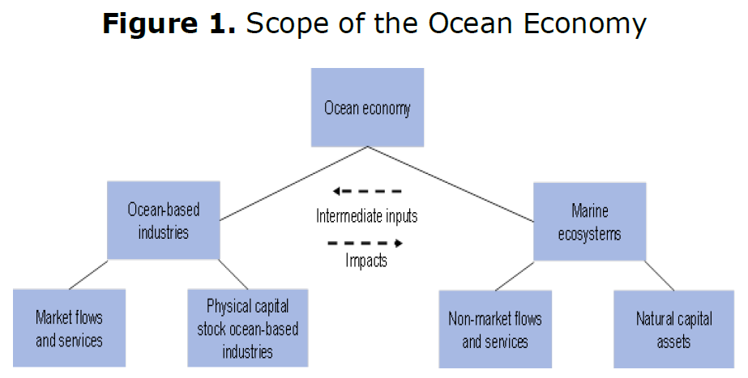

Innovation in the oceans economy

Interest has been growing in the huge potential offered by the future development of ocean-based industries. The many economic activities that make use of the ocean possess great potential for boosting economic growth, employment and innovation. The “ocean economy” is defined as the sum of the economic activities of ocean-based industries, together with the assets, goods and services of marine ecosystems (Figure 1). In many cases, marine ecosystems provide intermediate inputs to the ocean-based industries. Conversely, ocean industries can impact the health of marine ecosystems.
Economic activity in the ocean is expanding rapidly. Together, ocean-based industries already play a key role in the world economy. Calculations on the basis of the OECD’s Ocean Economy Database estimate the ocean economy’s output in 2010 at USD 1.5 trillion in value added, or approximately 2.5% of world gross value added (GVA). This is roughly equivalent to the size of the Canadian economy that same year (OECD, 2016). However, the ocean faces growing environmental pressures, and adequate policies for innovative and sustainable ocean development are ever more needed.
The last decade has seen a spectacular increase in attention devoted to the need to protect the world’s oceans and seas. The ocean has absorbed much of anthropogenic carbon emissions, leading to ocean acidification (see the chapter on “Megatrends for STI”). Also, sea temperatures and sea levels are rising and ocean currents shifting, resulting in losses in biodiversity and habitat, changes in fish stock composition and migration patterns, and a higher frequency of severe ocean weather events. The prospects for future ocean development are being further aggravated by land-based pollution, in particular agricultural run-off, chemicals and plastics, as well as by overfishing and depleted fish stocks in many parts of the world. An important constraint on the future development of the ocean economy is the continuing deterioration of its health, necessitating urgent public policy intervention.
One of the most dynamic drivers of the ocean economy’s future development is science and technology. New knowledge and a growing range of technologies are gradually pervading every maritime sector, where they are adopted and adapted, triggering yet further innovation. Indeed, many of the scientific and technological advances in the pipeline are expected to have a transformational impact. Particularly striking are the potential innovation benefits to be reaped from combining different ocean technologies, constructing multi-purpose ocean platforms, co-locating ocean-based activities from different sectors, and seeking synergies from collaboration among different ocean industries.

Source: OECD (2016), The Ocean Economy in 2030, http://dx.doi.org/10.1787/9789264251724-en [1].
The expected growth of ocean-based industries highlights the prospect of growing pressures on ocean resources and ocean space. These are already under considerable stress, not least of all in economic exclusion zones (EEZs), where most of the activity takes place. The inability up to now to deal with these pressures in an effective, timely way is in large part due to the historical approach to managing marine activities on a sector-by-sector basis, as illustrated by many national policies. At least for the foreseeable future, the regulation of ocean activities is expected to continue to be largely sector-driven, with efforts focusing on the integration of emerging ocean industries into existing and fragmented regulatory frameworks. In a positive sign, the number of countries and regions putting in place strategic policy frameworks for better ocean management and the protection of marine ecosystems within their EEZs has increased in recent years in response to growing pressures.
In addition to the much-needed improved management of the ocean, scientific and technological advances are expected to play a crucial role both in addressing many ocean-related environmental challenges and in developing ocean-based economic activities. Innovation in advanced materials, subsea engineering and technology, sensors and imaging, satellite technologies, computerisation and big data analytics, autonomous systems, biotechnology and nanotechnology – every sector of the ocean economy – stands to be affected by these technological advances. As one illustration of useful policy action, improving the sharing of technology and innovation among countries at different levels of development is beneficial for all involved. To take another example, reinforcing international co-operation specifically in maritime science and technology would be a means to stimulate innovation and strengthen the sustainable development of the ocean economy. This would entail undertaking comparative analyses and reviews of the role of government policy regarding maritime clusters around the world, for example, notably in respect to their effectiveness in stimulating and supporting cross-industry technological innovations in the maritime domain.
Policies for innovative and sustainable ocean development. Innovation in marine and maritime domains has become a priority for many countries around the world, often with sustainability issues as a major policy item. In Lithuania, several marine environment aspects are covered in the National Research Programme on the Sustainability of agro-, forest and water ecosystems (2015–21). In Ireland, the country’s marine potential is a key national objective, with an integrated marine plan “Harnessing Our Ocean Wealth”, which aims to encourage research, knowledge, technology and innovation. In France, on the recommendation of the National Industrial Council, the Innovation 2030 Commission identified eight strategic goals to address future societal needs, in particular the development of marine resources and metals and the desalination of seawater. Selected projects have been funded from the Investments for the Future Programme (PIA) and the Public Investment Bank (Bpifrance), from start-up projects to a full development phase starting in 2016. In Italy, the RITMARE Flagship Project is one of the National Research Programmes funded by the Italian Ministry of University and Research. It is coordinated by the National Research Council and involves an integrated effort on the part of most of the scientific community working on marine and maritime issues, as well as some major industrial groups.
In Norway, the seas and oceans is one of six priority areas in the government’s long-term plan for research and higher education. Several major national programmes are underway: HAVBRUK2 is a large-scale programme on aquaculture research that is ongoing until 2025, and MAROFF is a programme for industry-oriented R&D for the maritime industries (i.e. shipping companies, shipbuilding industry, service providers and equipment suppliers to all types of vessels and aquaculture facilities). In Sweden, a strategy is also being put in place to promote maritime business, while in Croatia, there are initiatives to enhance R&D in the Croatian marine sector to find new niches and markets for the national shipbuilding industry, as well as in fisheries and aquaculture. In Turkey, a 2015 R&D Support Programme was set up to promote domestic production in different marine sectors and related technologies. A wealth of policy initiatives can also be found in Latin America. In Mexico, the Ministry of Economy operates several programmes to boost R&D in specific sectors, in particular the marine sector, with inputs from the National Council for Science and Technology (CONACYT). In Colombia, one of the thirteen science, technology and innovation programmes focuses on the Sea and Marine Resources.
Joining forces for a sustainable ocean. In most countries, many different sector-specific institutions deal with marine and maritime issues. To ensure better policy-making, there have also been recent efforts to coordinate interested bodies at the national level. For instance, several Italian research institutions have established a Joint Research Unit at the national level. In Iceland, a network was set up consisting of over 100 marine industry enterprises, forming the Iceland Ocean Cluster, to foster innovation partnerships and new activities. And in Denmark, the Development and Demonstrations programme (GUDP) aims to create better links between research, development and the demonstration of knowledge in the areas of food, agriculture, fisheries and aquaculture. In South Africa, the Operation Phakisa Oceans Economy is the latest policy initiative to promote the coordination of the private sector and publicly funded researchers through the South African Marine Research and Exploration Forum (SAMREF). And in Korea, the government has established a global network to offer the repair and maintenance of shipbuilding material, assembling many actors along the value chain.
In terms of international cooperation, there are also many ongoing initiatives. As an illustration, the European Multidisciplinary Seafloor and water-column Observatory (EMSO) is a distributed research infrastructure at fixed open-ocean monitoring nodes that is connecting marine research facilities across the oceans and seas of Europe: from the Arctic, through the North Atlantic, through the Mediterranean to the Black Sea. The Western Mediterranean Forum on Research, Innovation and Higher Education, also known as the 5+5 Dialogue, is an informal policy dialogue that brings together ten Mediterranean countries: five countries from the Arab Maghreb Union (Algeria, Libya, Morocco, Mauritania and Tunisia) and five members of the European Union (Spain, France, Italy, Malta and Portugal). This programme coordinates training initiatives for researchers, scientists and managers to encourage the creation of stable and attractive career pathways to support the marine and maritime sectors.
The current practices of developing ever more activities in uncoordinated fashion will only lead to the further deterioration of the ocean, putting future generations at risk. In order to boost the long-term development prospects of emerging ocean industries and their contribution to growth and employment, while managing the ocean in responsible, sustainable ways, a number of steps could be taken. A recent major OECD report on the ocean economy puts forward a number of recommendations to enhance the sustainable development of the ocean economy, including: the opportunity to foster greater international co-operation in maritime science and technology as a means to stimulate innovation and strengthen the sustainable development of the ocean economy; the strengthening of integrated ocean management nationally and internationally; the improvement of the statistical and methodological base at national and international level for measuring the scale and performance of ocean-based industries and marine ecosystems and their contribution to the overall economy; and finally, the building up of greater government capacity for foresight about the ocean industry.
EC (European Commission)/OECD (forthcoming), International Database on Science, Technology and Innovation Policy (STIP), edition 2016, www.innovationpolicyplatform.org/sti-policy-database [2].
Innovation Policy Platform (IPP), https://www.innovationpolicyplatform.org [3].
Kergroach, S., J. Chicot, C. Petroli, J. Pruess, C. van OOijen, N. Ono, I. Perianez-Forte, T. Watanabe, S. Fraccola and B. Serve, (forthcoming), “Mapping the policy mix for innovation: the OECD STI Outlook and the EC/OECD International STIP Database”, OECD Science, Technology and Industry Working Papers.
OECD (2016), The Ocean Economy in 2030, OECD Publishing, Paris, http://dx.doi.org/10.1787/9789264251724-en [1].
Contributed by Claire Jolly,
OECD Directorate for Science, Technology and Innovation, based on the work carried out by the OECD Space Forum.
Please cite as: OECD (2016), " Innovation in the oceans economy", in OECD Science, Technology and Innovation Outlook 2016, OECD Publishing, Paris, http://dx.doi.org/10.1787/sti_in_outlook-2016-33-en [4].